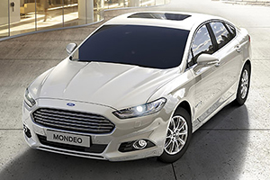
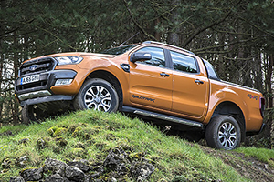

隨著臺灣法規的變更，自2017年4月1日起，國內貨車座位數規定放寬，不再是原先所限制的3人座，而能夠依循原廠設計的座位數，而最大的差異點，就在於國內販售的Pick-Up貨卡車款，將可合法5座上路。福特六和也反應迅速地，在近日正式宣布Ford Ranger 5座版本合法上路，同時公告即日起，Ford全臺之服務廠，歡迎Ranger車主預約回廠辦理原廠證明，以利行照更新。
隨著國內消費者對於休閒生活的重視，休旅車款所擁有的機能性與舒適性，成為許多消費者購車時的首選，而更具曠野風尚、空間機能更出色的Pick-Up貨卡車款，也是許多年輕消費族群的心儀目標，然而礙於原先國內法規之故，貨卡車款在國內要合法上路，僅能有3座的座椅配置，擁有後排座椅之貨卡每每上路，就需要冒著被取締的風險，也是許多消費者對於貨卡車款望之卻步的因素之一。
福特六和在2010年時正式導入貨卡戰力的Ranger車系，隨後在2012年年底時，導入了新世代之Ranger，並於2016年初，於國內發表小改款之Ranger，而隨著Ford最新世代車載系統SYNC 3的推出，同時強化產品市場競爭力，福特六和在2016年9月底，針對2017年式Ford Ranger導入SYNC 3。
受惠於配備、尺碼、以及售價等產品特色，Ford Ranger在臺灣為數不多的貨卡級距中，擁有相當出色的市占表現，隨著國內法規的放寬，也意味著應當會有更多品牌，導入麾下的貨卡戰力，因此福特六和自然也因應市場改變，而意圖再次強化Ranger市場競爭力。
針對臺灣貨車法規的放寬，U-CAR已經有專文做出相關報導，不過，在此也特別再行贅述一次，雖然法規已經放寬，也就是說貨卡車款可以合法5座上路，但這並不代表家中的貨卡在道路上行駛時，不須擔憂員警攔查開單，因為車主仍需要向監理機關做出變更，才算是真正的合法上路，畢竟行照上仍然是「雙座」、或是「三座」。
根據福特六和表示，車主須回原廠辦理證明，隨後再逕行前往監理機構，辦理變更與驗車，之後才能稱為合法上路，當然，自即日起開始販售的Ford Ranger，沒有絲毫問題，出廠證明即為5座之合法版本。


-

勢在必型－Ford Focus黑潮焦點版試駕體驗
Ford Focus在國產車市場中，一直以來都有著特別的魅力，鋼砲般的外觀、紮實的歐系血統，還有精湛的動力與操控表現......等等，都是Focus不同於其它國產車所具有的優勢與吸引力...
-

歐洲科技 務實之選─Ford Mondeo
基於歐盟市場對油耗、排放等環保法規的高標需求，歐洲車廠挹注大量資金研發高效動力系統，以Ford來說，在汽油及柴油引擎、Hybrid油電混合動力等領域上都有顯著的成果，為了讓國內消費者也能搶搭這波高效動能列車...
-

讓生活變得無限可能─Ford Ranger
有些人與生俱來冒險犯難的精神，不甘平淡過日子，竭盡所能地挖掘新的世界，滿足自己的求知慾，過程中或許得披荊斬棘，但靠著堅強的毅力與不怕苦的耐力，最終征服自我的那一刻，最是甜蜜動人...
c2017 MediaBrilliance System Corporation. All Rights Reserved.